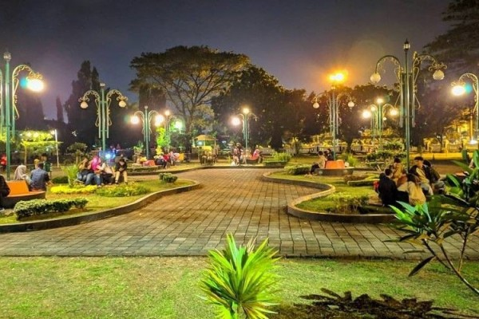

alunalunsubang
alunalun
Alun-alun Subang saat ini tengah menjadi sorotan berbagai pihak, pasalnya Pemerintah Kabupaten Subang saat ini tengah melakukan renovasi alun-alun Kabupaten Subang.
Alun-Alun Subang ini direncanakan menjadi ikon kebanggaan masyarakat Subang, sehingga para wisatawan dari luar Kabupaten Subang dapat berkunjung untuk menikmati ornamen khasnya suasana Subang. Secara geografis, Kabupaten Subang ini berbatasan dengan Kabupaten Bandung Barat disebelah Selatan, Kabupaten Purwakarta dan Karawang disebelah Barat, Laut Jawa disebelah Utara, serta berbatasan dengan Kabupaten Indramayu disebelah Timur.s